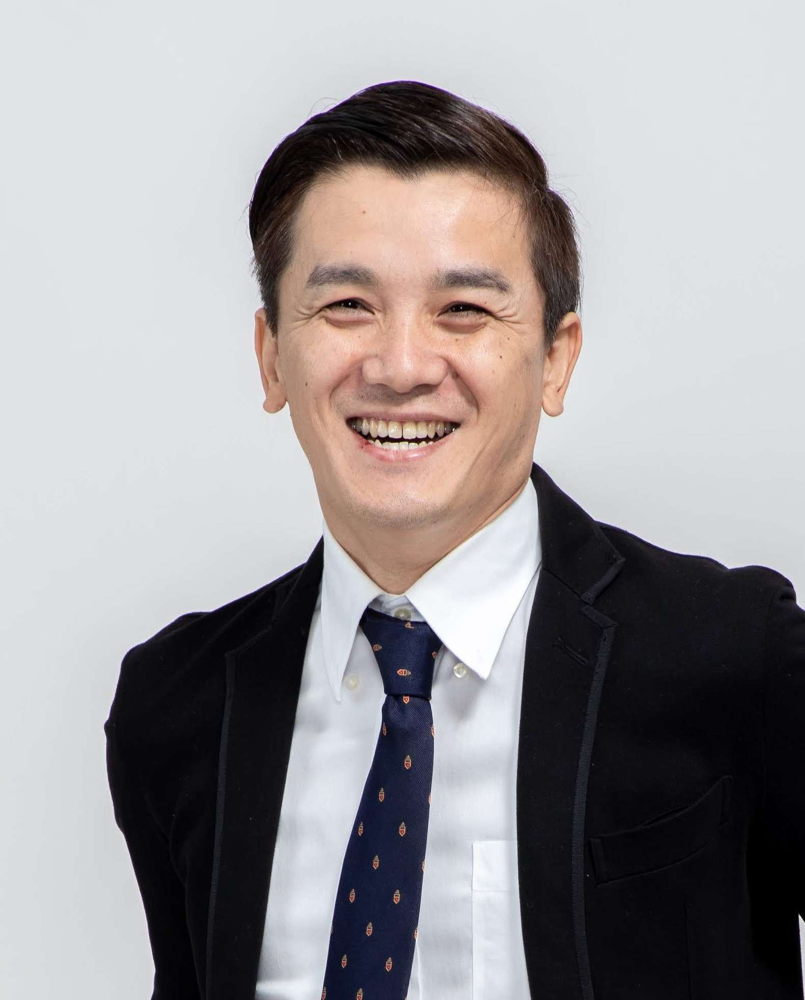

高知家関西リレーションズ INTERVIEW #01
室戸から大阪へ。
「考える力」で
AI時代の人を育てる

高知県室戸市で生まれ育ち、いまは大阪を拠点にAI研修の講師として企業や学校、自治体を飛び回る浜田陽介さん。研修の登壇は約100回、思考術の本も2冊出しています。地域活性化起業人として毎月室戸に帰り、故郷のAI導入を支える浜田さんに、仕事のことと高知への思いを聞きました。
01原点は、室戸の海
Q1浜田さんにとって、高知はどんな場所ですか？
生まれ育った、大切な場所です。目の前に太平洋が広がる室戸の風景は、どこにいても自分の原点だと思っています。
Q2大阪での生活も長いと思いますが、高知を意識することはありますか？
大阪にいても、いまだに土佐弁が抜けません。研修でもつい出てしまいますが、それで場が和むこともあります。自分は高知の人間なんだと、いつも感じています。
02論理と創造、そしてAIへ
Q3システムエンジニアからゲームプランナーへ。かなり思い切った転身ですね。
正反対の仕事に見えますが、自分の中ではつながっています。金融システムの仕事では、一つのミスも許されない論理の組み立て方を叩き込まれました。ゲームの仕事では逆に、正解のないところから面白さを生み出す発想が求められました。論理と創造、両方の頭の使い方を経験できたことが、いまの仕事の土台になっています。
Q42017年に独立し、いまはAI研修の講師として活躍されています。なぜAIだったのでしょうか。
AIは「考える力」をもう一度問い直す道具だと思っているからです。AIに何を任せ、何を自分で考えるのか。その線引きができる人とできない人で、成果に大きな差がつきます。ツールの使い方を教えるだけでなく、AIを使いこなすための頭の使い方まで伝えたい。それが一番の動機です。
Q5研修の現場で大切にしていることは何ですか？
「自分の仕事で明日から使える」ところまで落とし込むことです。経営者、管理職、現場の方では、AIに期待することがまったく違います。エンジニアでない人でも、ノーコードやVibe Codingを使えば自分で業務ツールを作れる。その手応えを持ち帰ってもらえるようにしています。これまで岩谷産業さんやスズキさん、ダイコク電機さんなどで研修をさせていただきました。商工会議所・商工会などでのAIセミナーも50回を超えました。
Q6教育や研究の現場にも関わっているそうですね。
OCA大阪デザイン＆ITテクノロジー専門学校でAI講師をしています。東京大学の藤本研究室ではAI活用を支援していて、研究室から生まれるスタートアップは2027年4月に設立予定です。若い人や研究者と一緒に仕事をすると、こちらも大きな刺激を受けます。
03故郷に返す、これから
Q7故郷の室戸市でもAI導入を支援されています。
地域活性化起業人として、毎月室戸に帰って市役所のAI活用をお手伝いしています。大阪で企業や学校を相手に積み重ねてきたことを、生まれ育った町に返せる。こんなにうれしい仕事はありません。いまは市の方々と一緒に、AIを安心して使うためのガイドラインづくりに取り組んでいます。
Q8これから高知とどう関わっていきたいですか？
人口が減り、人手が足りない地域こそ、AIで変えられることがたくさんあります。室戸だけでなく高知全体で、AIを当たり前に使える土台をつくりたい。大阪にいるからこそ見えるものを持ち帰り、関西と高知をつなぐ役目を果たせたらと思っています。
Q9休日はどう過ごしていますか？
サーフィンです。月に2〜3回、和歌山や三重、京丹後、福井まで出かけます。高知の生見や中村にもよく行きます。やっぱり高知の海は特別ですね。
編集後記
「研修でもつい土佐弁が出てしまう」と笑う浜田さん。論理と創造を行き来してきた経歴も、AIを「考える力」を問い直す道具と捉える視点も、話を聞くほど一本の線でつながっていきました。大阪で積み重ねたものを室戸に持ち帰る姿は、関西にいながら高知と関わる、一つのかたちだと感じます。関西で、高知で、またどこかでお会いできるのを楽しみにしています。（若枝）